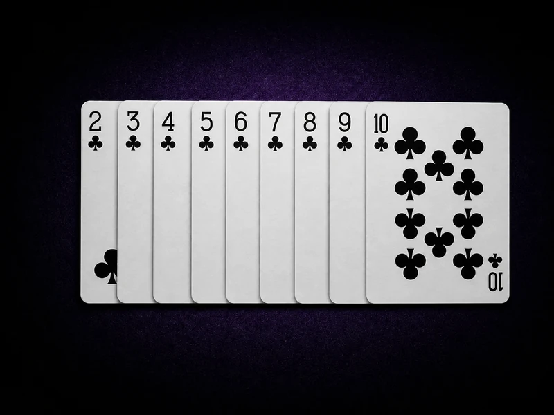
Card 01
2–10
2到10的牌，依照牌面數字本身計算點數。
例如：2就是2點，7就是7點，10就是10點
完整整理21點規則、牌值計算、莊家補牌規則、要牌停牌、加倍分牌與Blackjack基本策略，帶新手快速了解黑傑克玩法與常見技巧
21點 Blackjack 是規則型桌上遊戲，玩家需要理解牌值、莊家規則與下注選擇，才能判斷什麼時候要牌、停牌、加倍或分牌
本文整理的是21點規則與基本技巧教學，不是保證獲利方法。
不同平台與遊戲版本可能有不同規則，實際遊玩前請以平台內遊戲說明為準。
21點又稱 Blackjack，是娛樂城中最經典的桌上遊戲之一。玩家的目標是讓手牌點數盡量接近21點，但不能超過21點。只要玩家點數比莊家高，或莊家爆牌，玩家就有機會獲勝
21點不像老虎機完全依靠轉輪結果，玩家每一手都需要做決策，例如要牌、停牌、加倍、分牌等。因此21點除了運氣以外，也很重視規則理解與基本策略
理解牌點是21點入門最重要的部分，以下是所有牌的點數計算方式

2到10的牌，依照牌面數字本身計算點數。
例如：2就是2點，7就是7點，10就是10點
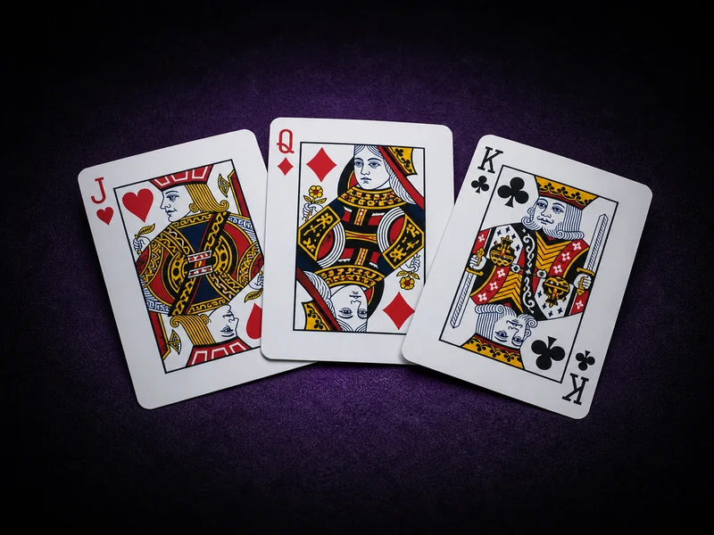
J、Q、K 都算10點。這三種牌也被稱為人頭牌，在21點中都以10點計算。
人頭牌一律以 10 點計算
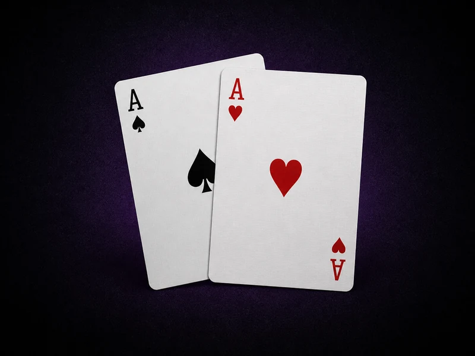
A可以算1點，也可以算11點，系統通常會自動選擇對玩家較有利的點數。
例如 A+6 可以算7點或17點；A+10 則是 Blackjack
先搞懂玩家與莊家各自的目標，再認識 Blackjack 與爆牌這兩個最關鍵的牌型結果
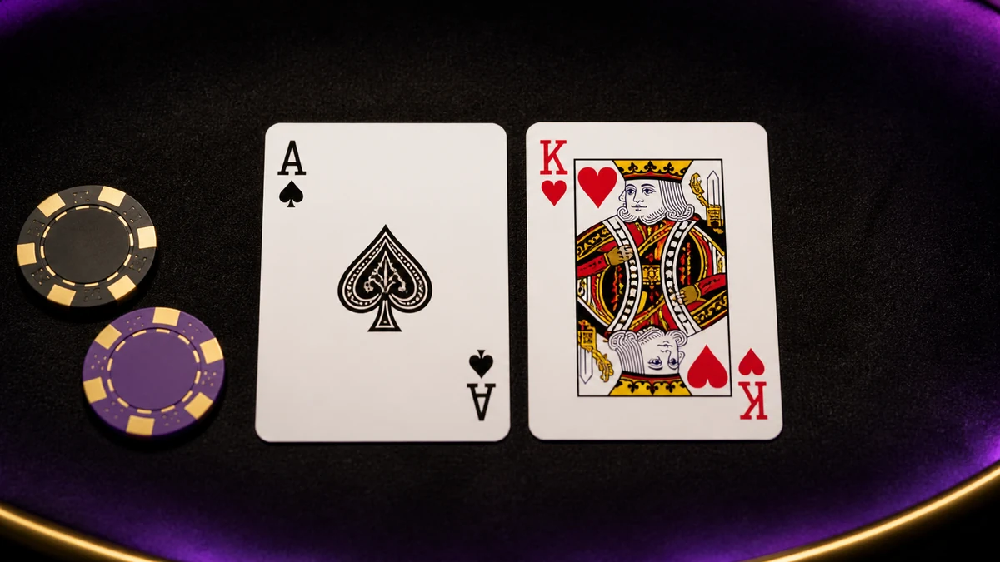
起手 A＋10點牌（A+10、A+J、A+Q、A+K）即為 Blackjack
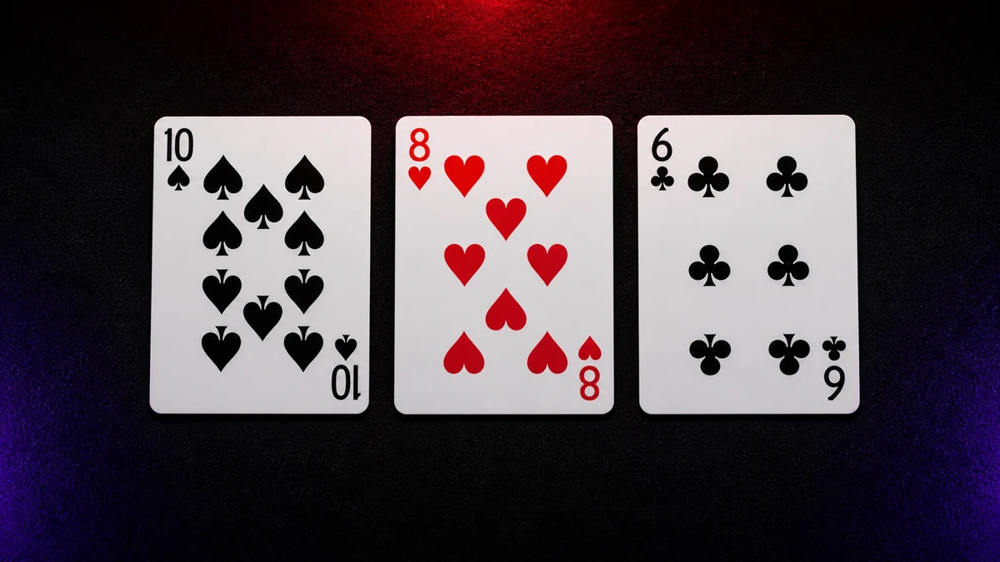
三張牌合計超過21點即為爆牌，該手牌直接輸掉
拿到牌之後，玩家可以做的五種基本選擇。先弄清楚每個按鈕代表什麼，再談策略
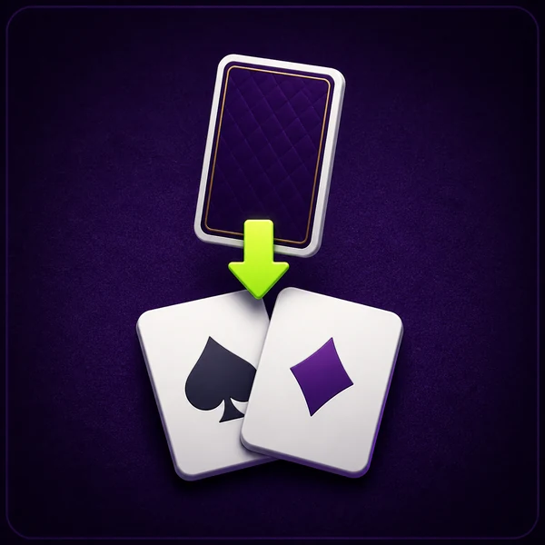
要求系統再發一張牌。點數偏低時通常會要牌，但點數接近21點時會增加爆牌風險。
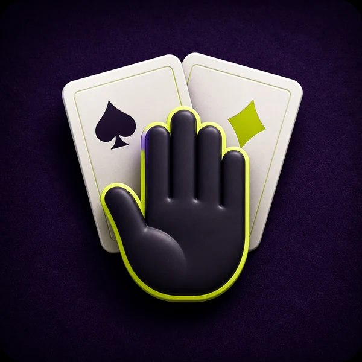
不再要牌，保留目前點數等待莊家補牌與比牌。點數偏高時（例如17點以上）通常會考慮停牌。
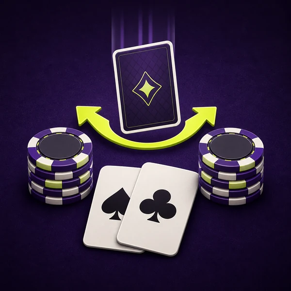
追加下注，通常只能再拿一張牌。常見於起手有優勢時，例如10點或11點，但仍要看莊家明牌。
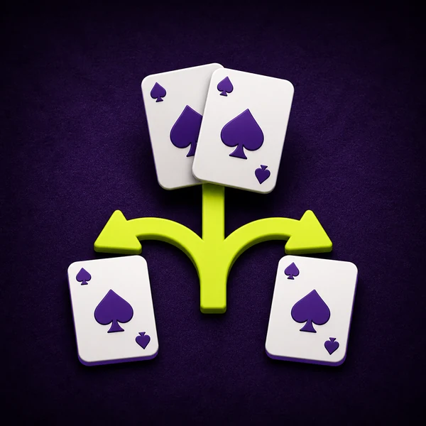
起手兩張點數相同時（例如8和8、A和A），部分版本可拆成兩手繼續遊玩，通常需要額外下注。
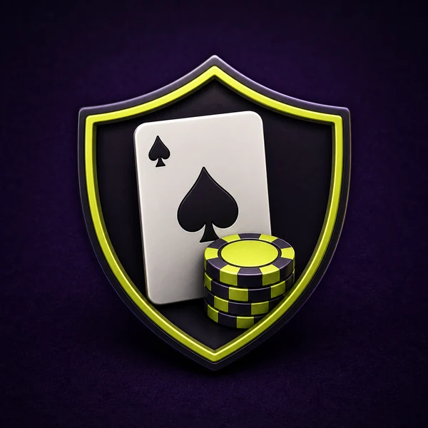
莊家明牌是A時，部分版本提供的額外下注選項。新手不一定需要優先使用，建議先理解基本策略。
21點不是每一手都靠感覺下注，新手可以先掌握幾個基本方向，減少明顯錯誤
如果玩家手牌點數偏低，例如8點以下，通常還有足夠空間要牌，爆牌風險相對低。
當手牌已經達到17點以上，再要牌的爆牌風險會明顯提高。新手可以先用比較保守的方式，遇到高點數時優先考慮停牌。
當玩家手牌是11點時，下一張牌只要拿到10點牌就能變成21點，因此很多21點策略會把11點視為常見加倍時機。不過仍要看莊家明牌與平台規則。
在常見基本策略中，A+A 與 8+8 經常被視為適合分牌的牌型。A 分牌有機會組成更強牌，8+8 則能避免停留在16點這種尷尬點數。
新手常見錯誤是一直想湊到21點，但21點真正的重點是比莊家高且不要爆牌。很多時候，18、19、20點已經是很好的停牌點。
21點算牌是透過觀察已經出現過的牌，推估剩餘牌組中高牌與低牌比例的策略。理論上，如果剩餘牌組中10點牌與A比較多，玩家拿到強牌的機會會提高
不過線上21點、真人21點與不同平台版本可能會頻繁洗牌，或使用連續洗牌機制，因此算牌在很多線上環境中不一定實用。新手可以先把算牌當成進階觀念，不需要一開始就當成主要玩法
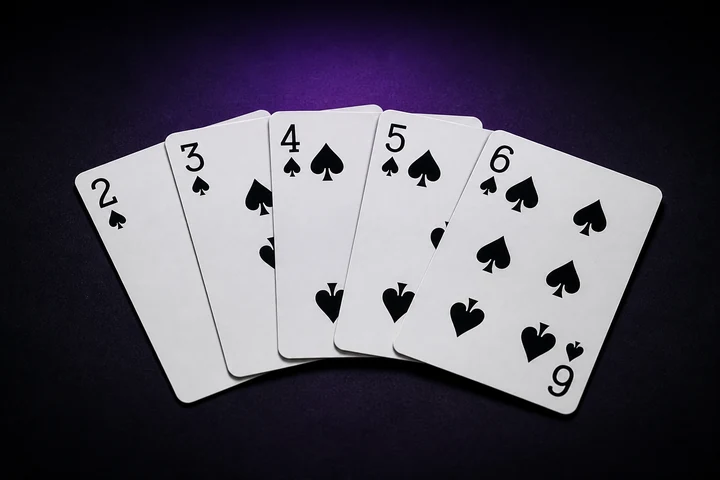
2 – 6
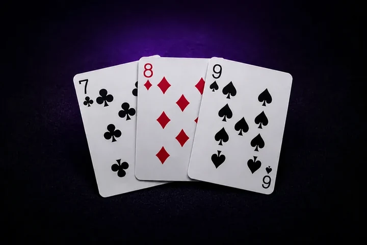
7 – 9
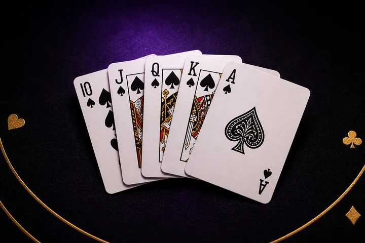
10、J、Q、K、A
一手牌打完後，常見會出現四種結果。實際賠付方式仍以各平台的遊戲賠付表為準
玩家點數高於莊家，且沒有爆牌，就會贏得該局。一般勝利的賠率通常依平台規則顯示。
如果玩家起手就是 Blackjack，通常會有較好的賠率。不過不同平台版本可能不同，實際仍要看該遊戲的賠付表。
如果玩家與莊家點數相同，通常稱為平手或 Push。多數情況下，玩家原下注會退回，不算輸也不算贏。
如果玩家超過21點，就會爆牌，該局直接輸掉。21點技巧中最重要的概念之一，就是避免在高點數時過度要牌。
兩種版本規則核心相同，差別主要在節奏、發牌方式與臨場感
新手先玩哪一種？
如果你是完全新手，可以先從節奏較單純的線上21點開始理解規則，再嘗試真人21點。重點是先看懂牌值、莊家規則與操作選項
想直接看看實際的21點遊戲長什麼樣子，可以前往 Stake 21點遊戲分類 瀏覽不同版本
新手最容易踩到的四個坑，先避開這些，勝過記一堆進階公式
21點不是只看自己手牌幾點，也要看莊家的明牌。如果莊家明牌偏弱，玩家不一定需要冒險要牌；如果莊家明牌偏強，玩家就要更謹慎判斷。
當手牌已經接近21點，繼續要牌的爆牌機率會提高。新手常因為想湊更高點數而爆牌，這是很常見的錯誤。
加倍與分牌都是進階操作，不是看到按鈕就一定要使用。新手可以先熟悉基本策略，再慢慢理解什麼牌型適合加倍或分牌。
算牌是進階策略，不是保證獲勝的方法。尤其在線上21點環境中，洗牌機制與遊戲版本會影響算牌效果，新手不應該把它當成必勝玩法。
看完21點規則與技巧，再深入了解其他桌上遊戲、真人娛樂與娛樂城平台評測